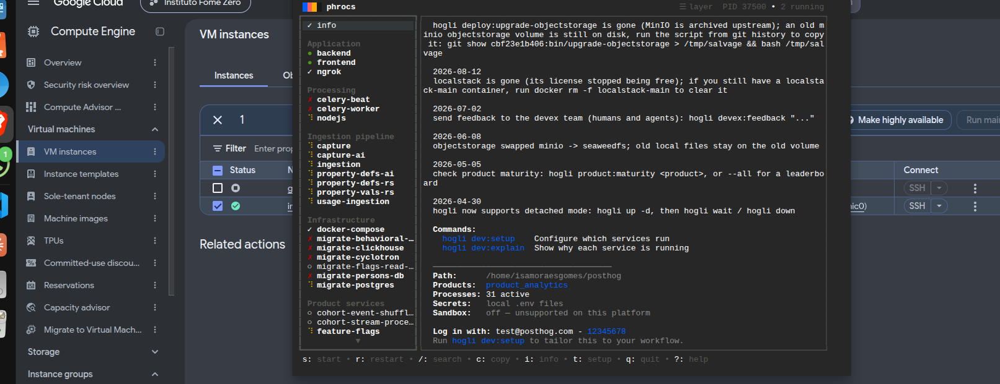

Two tickets. Prep, triage, writing, investigation.
None of this was asked for. I wanted to arrive already knowing what a support ticket feels like from the inside, so I built myself a day of them.
I forked the repo and cloned it locally. The build died on my laptop, which only has 8GB of RAM, so I moved it onto a Google Cloud VM I already had sitting around from another project. Ubuntu 24.04, 16GB.
From there: flox activate, then hogli start. 31 processes, all the logs in one terminal UI.

In the end I did the actual exercises against PostHog Cloud, which is what the team suggested in the SuperDay Slack channel. The local stack was not the shortest path to the thing I was trying to learn. But getting it up taught me the architecture, and that turned out to matter more than I expected: when I later had to reason about where a session recording can get lost, I already knew what sits between the browser and the dashboard.
I needed a customer, so I played one. I put a fake shop page on my own site's project and planted real bugs in it, one per ticket:
disable_session_recording: true in the init, which stops session replay while leaving everything else working.
A renamed event, which kills a saved chart while the app stays perfectly healthy.
Then I investigated them as if I had no idea what was wrong. Committing the clean version first meant git diff showed exactly what I had broken, and git checkout undid it in one command.
Two tickets, deliberately more work than fits: an Enterprise customer tagged churn_risk losing session recordings mid usability study, and a top_20 Enterprise customer whose weekly active users dropped 30% with a board meeting at 16:00.
I triaged them against the handbook's actual rules: response targets by plan, the tags that have to be resolved or handed over by end of rotation, paid before community. Then I wrote the acknowledgements, worked the investigation, and wrote the final replies and the handover.
A deadline is not a priority. It tells you when to start, not what to do first. You estimate the work, double it, subtract from the deadline. Before that time, the hours belong to whatever is actively losing data.
The SLA clock measures the first reply, not the fix. Twenty minutes of short acknowledgements at the start of the day buys the whole day.
Configuration is not state. The server saying "recording is enabled" and the SDK config holding recording options both tell you nothing about whether anything is being recorded. Three things answer that, and none of them is a settings page.
"We didn't change anything" is scope, not a lie. The person writing didn't change anything. Someone on their team might have.
Honest status: I worked the session replay ticket end to end and found the root cause. The second ticket and the escalation note are unfinished.
Which is itself the point of the exercise. The queue was built to be bigger than the day.
Three bugs to plant in your own project, one per ticket. Do this on the machine with VS Code, in isathepigeon-site/public.
git status. If lab.html and lab.js aren't committed yet, commit them now, while they still work.git diff show exactly what you broke and git checkout lab/lab.html undo it in one command.git restore --staged lab/lab.html.
In lab.html, inside posthog.init, add the last line. Save, reload the shop, and the investigation starts.
disable_session_recording is a posthog-js config option. The session recorder is a separate chunk of JavaScript that the SDK fetches after it loads, and that watches the DOM so the screen can be reconstructed later. With this option set to true, that chunk is never fetched and never started. The rest of the SDK carries on intact: pageviews, autocapture, your own events, all still firing.
Dana's symptom is "no new recordings, but the rest of PostHog works". That split, one product dead and all the others alive, is the signature of a disabled setting rather than an outage. And it is the most common real cause: someone turned it off once, for cost or for privacy, and nobody remembers. Their troubleshooting docs list this exact option.
Network tab, Fetch/XHR filter, click around the shop. Before, you saw several /s/ calls. Now there are none, only /e/. Worth running it in both states, with and without the line, so you remember what each one looks like.
/s/ going out = the SDK isn't even trying to record. Config problem, customer side./s/ going out with a 200 and still no recordings in the list = ingestion problem, PostHog side.In lab.js, rename an event. Save, use the shop a few times, then look in the PostHog dashboard.
The first argument to posthog.capture() is the event name, and that name is its identity. PostHog does not track "that line of code", it tracks the string. So changing the string renames nothing: as far as PostHog is concerned, one event stopped existing and a different one, with no history at all, started existing.
Every saved insight, funnel and dashboard points at the old name. The second the deploy lands, all of them are counting an event that no longer arrives, and the chart falls off a cliff. The app is perfect, no user complains, nothing shows up in an error log, which is exactly why the customer writes "we didn't change anything" in good faith. In a real app the drop is partial rather than total, like Priya's 30%, because the same event fires from several places and the deploy only renamed one of them.
Run posthog.debug() and use the shop. Events keep firing, under a new name. In the dashboard, cart_item_added is born on the deploy date and the old one stops on the same day. You will not see a real 30% drop in a chart, that would need weeks of data. What you can reproduce is the cause and the evidence.
Comment out instead of deleting, so you can flip a bug on and off without retyping:
An acknowledgement. She already got an automatic confirmation when the ticket was created, so this has to add something: what you're doing and when you'll be back.
She has a deadline. Your reply has to say whether you'll make it, and what she does if you don't.
Their real text during a session replay ingestion failure, published on the status page.
Tone rules from the handbook: open with "Hey [name]". Acknowledge frustration and thank them for the report. Make clear who is waiting on whom, and for how long. Don't make the customer do work you can do yourself, and explain why you need anything you ask for.
Cheapest to most expensive. Each one answers a different question. Click to tick.
Cheapest to most expensive. Each one answers a different question. Click to tick.
Write as you go. This becomes the customer reply and the handover note, so write it for whoever reads it next.
The answer she actually gets once you know the cause. Four things belong in it: what was wrong, in her words not yours; whether her lost recordings come back or not; what she has to do, if anything; and what you did on your side.
Same four things. Plus the one she asked for: is the drop real or not, said plainly enough that she can repeat it in a board meeting without you.
Different from escalating. This is for unfinished work going to the next Support Hero at the end of your shift, not to another team. The rule is the same: say why you're handing it over and what you expect to happen next.
Reset clears every tick, estimate, note and the clock. Your theme stays.